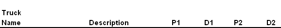

Truck Definition
Description
The truck definition table defines both trucks and/or lane loading with moment and shear riders.
Parameters
Truck Name
Unique truck name. Use same name here as on the Live Load Definition entry to include stationary forces.
The Px and Dx parameters defines the truck axle loads and location. If more than four axles are required, continue entering more axle loads on the next line. You need only repeat the truck number on subsequent lines since the program only reads the uniform loading, lane loading, and title from the first line for any truck definition.
P1
Enter axle Load (not required) (Kip)
D1
Enter spacing to next axle (not required) (Feet)
P2
Enter axle Load (not required) (Kip)
D2
Enter spacing to next axle (not required) (Feet)
P3
Enter axle Load (not required) (Kip)
The Unif, Mom, and Shear entries are only needed on the first line of a truck definition and are used to specify the alternate lane loading forces. Enter values in the uniform, moment, and shear fields if an alternate lane loading is to be compared with the axle/truck loading. The load resulting in the greatest forces on the bridge will be used. If you want to keep these results separate from the axle loading condition, then create two trucks, one with only axle loads, and another with only lane loads. Combine the two using the Truck Group and Lane Group entries.
Unif
Enter alternate lane loading uniform load (not required) (KLF)
Mom
Enter alternate lane loading moment rider (not required) (Kip)
Shear Enter alternate lane loading shear rider (not required) (Kip)